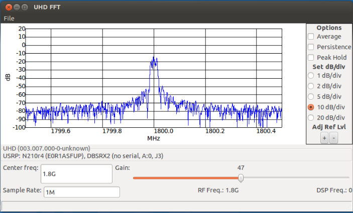
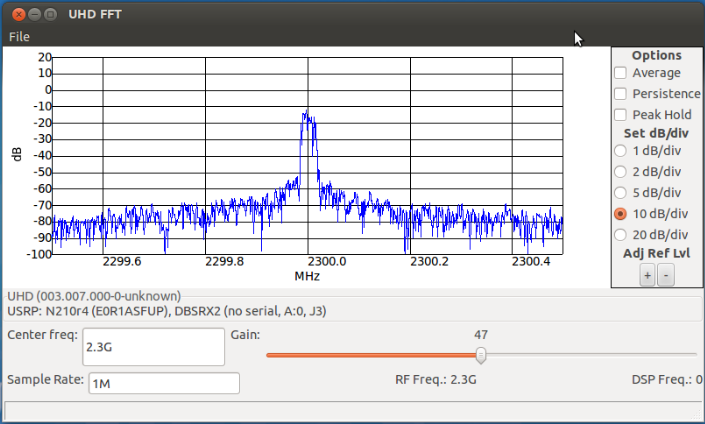
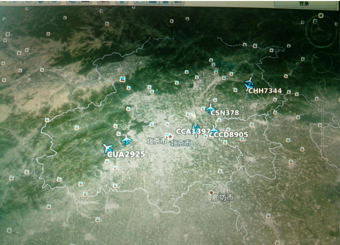

DBSRX2测试文档
DBSRX2


DBSRX2介绍：
800 MHz 到 2.3 GHz 收发子板。只支持 UHD。
刷写与测试环境：
USRP N210系统镜像
设备要求：
两台装有USRP N210系统镜像的电脑，两台USRP n210设备，一块wbx(50MHz to2.2GHz),一块sbx（400MHz to 4.4GHz），两个6V电源，两根网线，两个天线。
测板思想：
由于子板SBX的收发是800MHz到2.3GH，所以多测试几个这个范围内的几个频率的收发就可以测试该SBX的好坏。以下我是用的900MHz、1800MHz、2000MHz、2.3GHz为例做的测试。
重写DBSRX2子板程序命令
使用USRP N210烧写子板DBSRX2插入子板后运行下面的命令：
在sudo su下运行
cd /usr/local/lib/uhd/utils
./usrp_burn_db_eeprom --id=0x0012 --unit=RX --args=”addr=192.168.10.2”
注：1、<args>是设备的地址参数（如果只有一个usrp的话，它便是可选项）。
2、<slot>是子板插槽的名称（如果usrp只有一个插槽solt的话，它便是可选项）。
3、如果要加serial号，可在上面命令中加入 –ser=一个数就可以了。
收发信号测试
使用USRP N210母版用uhd相关程序对子板SBX进行测试。
测试方法一：
注：如果对命令相关参数不理解，可在你所用命令后加--help运行，查看相关信息。
1、一台电脑+N210+wbx上运行
在sudo su下(发射)
cd /usr/local/share/gnuradio/examples/digital/narrowband/
./benchmark_tx.py –f 900M
2、另一台电脑+N210+DBSRX2上运行
在sudo su下(接收)
cd /usr/local/bin/
./uhd_fft –f 900M
出现图-1信息表示DBSRX2接收 900MHz信号成功

图-1
测试方法二：
注：如果对命令相关参数不理解，可在你所用命令后加--help运行，查看相关信息。
1、一台电脑+N210+wbx上运行
在sudo su下(发射)
cd /usr/local/share/gnuradio/examples/digital/narrowband/
./benchmark_tx.py –f 1800M
2、另一台电脑+N210+DBSRX2上运行
在sudo su下(接收)
cd /usr/local/bin/
./uhd_fft –f 1800M
出现图-2信息表示DBSRX2接收 1800MHz信号成功

图-2
测试方法三：
注：如果对命令相关参数不理解，可在你所用命令后加--help运行，查看相关信息。
1、一台电脑+N210+wbx上运行
在sudo su下(发射)
cd /usr/local/share/gnuradio/examples/digital/narrowband/
./benchmark_tx.py –f 2000M
2、另一台电脑+N210+DBSRX2上运行
在sudo su下(接收)
cd /usr/local/bin/
./uhd_fft –f 2000M
出现图-3信息表示DBSRX2接收 2000MHz信号成功

图-3
测试方法四：
注：如果对命令相关参数不理解，可在你所用命令后加--help运行，查看相关信息。
1、一台电脑+N210+sbx上运行
在sudo su下(发射)
cd /usr/local/share/gnuradio/examples/digital/narrowband/
./benchmark_tx.py –f 2300M
2、另一台电脑+N210+DBSRX2上运行
在sudo su下(接收)
cd /usr/local/bin/
./uhd_fft –f 23000M
出现图-4信息表示DBSRX2接收 2000MHz信号成功

图-4
测试方法五：
DBSRX2的频率范围可以接收飞机信号，可完成飞机轨迹跟踪的实验，如图-5所示
设备要求：一台装有V10 mode-s+Openbts系统的电脑，一套USRP N210，一块DBSRX2,一个6v电源，一根网线，一根天线。
注意： 详细步骤可参考“USRP N210使用手册—应用实例—N210-mode-实例 ”文档。

图-5